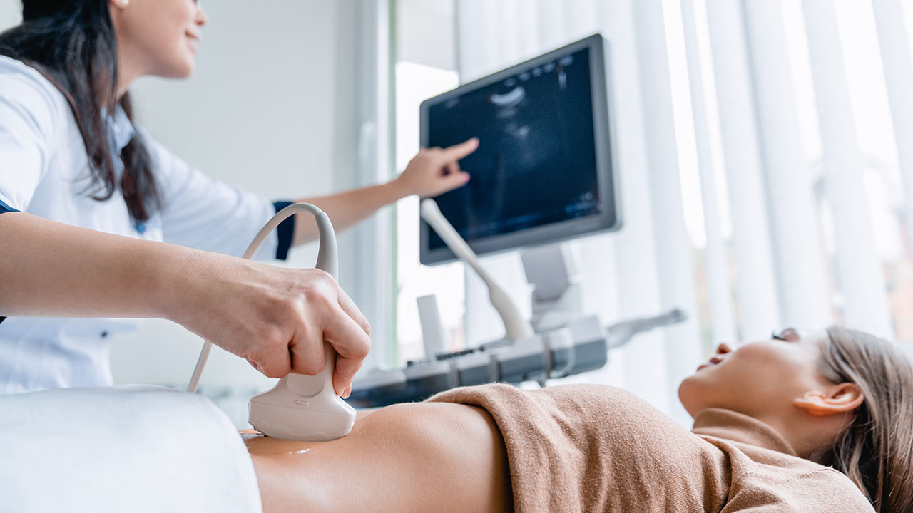

Hochauflösende Ultraschall-Diagnostik mit dem Samsung V8 ONE — vollständig strahlenfrei, schmerzlos und in Echtzeit. Ideal zur Beurteilung von Organen, Gefässen und Weichteilen.
High-resolution ultrasound diagnostics with the Samsung V8 ONE — completely radiation-free, painless, and in real time. Ideal for assessing organs, vessels, and soft tissues.
Das Samsung V8 ONE ist ein Hochleistungs-Ultraschallsystem der neuesten Generation. Mit seiner überragenden Bildqualität, Doppler-Technologie und Echtzeit-Darstellung ermöglicht es eine präzise, strahlungsfreie Diagnostik für ein breites Indikationsspektrum.
The Samsung V8 ONE is a high-performance ultrasound system of the latest generation. With its outstanding image quality, Doppler technology, and real-time imaging, it enables precise, radiation-free diagnostics for a broad range of indications.
Ultraschall arbeitet mit Schallwellen — völlig ohne Röntgenstrahlung. Sicher für Kinder, Schwangere und empfindliche Patienten.
Ultrasound works with sound waves — completely without X-rays. Safe for children, pregnant women and sensitive patients.
Strukturen werden live dargestellt — Bewegungen (Herzschlag, Darmperistaltik, Gefässfluss) sind in Echtzeit sichtbar.
Structures are displayed live — movements (heartbeat, peristalsis, vessel flow) are visible in real time.
Flussmessungen in Blutgefässen, Beurteilung von Durchblutungsstörungen und vaskulären Veränderungen in höchster Auflösung.
Flow measurements in blood vessels, assessment of circulatory disorders and vascular changes in highest resolution.
Der Ultraschall ist vielseitig, sicher und schnell — ideal für Organe, Gefässe, Weichteile und Muskeln.
Ultrasound is versatile, safe and fast — ideal for organs, vessels, soft tissues and muscles.
Leber, Gallenblase, Gallenwege, Milz, Nieren, Harnblase, Bauchspeicheldrüse, Darm
Liver, gallbladder, bile ducts, spleen, kidneys, bladder, pancreas, intestine
Schilddrüsenknoten, Hashimoto, Speicheldrüsen, Lymphknoten am Hals
Thyroid nodules, Hashimoto's, salivary glands, cervical lymph nodes
Carotiden, Beinvenen, Nierenarterien, Aorta, Durchblutungsstörungen, Thrombosen
Carotids, leg veins, renal arteries, aorta, circulatory disorders, thrombosis
Muskelverletzungen, Sehnenentzündungen, Bursitis, Rotatorenmanschette, Achillessehne
Muscle injuries, tendinitis, bursitis, rotator cuff, Achilles tendon
Zysten, Lipome, Lymphknoten, Abszesse, Fremdkörper, Weichteiltumoren
Cysts, lipomas, lymph nodes, abscesses, foreign bodies, soft tissue tumours
Zysten, Fibroadenome, Brustdrüsenveränderungen, Verlaufskontrollen
Cysts, fibroadenomas, breast changes, complementary to mammography
Ja, Ultraschall gilt als sehr sicheres und nebenwirkungsfreies Verfahren. Es werden hochfrequente Schallwellen verwendet — keine ionisierende Strahlung. Ultraschalluntersuchungen können daher beliebig oft wiederholt werden und sind auch für Schwangere und Kinder unbedenklich.
Yes, ultrasound is considered a very safe procedure with no side effects. High-frequency sound waves are used — no ionising radiation. Ultrasound examinations can therefore be repeated as often as needed and are also safe for pregnant women and children.
Für Ultraschalluntersuchungen des Oberbauches (Leber, Gallenblase, Bauchspeicheldrüse) empfehlen wir, mindestens 4–6 Stunden nüchtern zu erscheinen, da Nahrung und Gas die Sicht auf die Gallenblase einschränken können. Wasser trinken ist erlaubt. Für andere Körperregionen ist Nüchternheit in der Regel nicht erforderlich — bitte fragen Sie uns bei der Terminvereinbarung.
For upper abdominal ultrasound examinations (liver, gallbladder, pancreas) we recommend arriving fasted for at least 4–6 hours, as food and gas can restrict the view of the gallbladder. Drinking water is permitted. For other body regions, fasting is generally not required — please ask us when booking your appointment.
Ja, beide Untersuchungen können am selben Tag durchgeführt werden und ergänzen sich häufig ideal. Ultraschall liefert schnelle, orientierunggebende Informationen in Echtzeit, während das MRT tiefgehende Detailbilder ohne Strahlung ermöglicht. Gemeinsam ergibt sich oft ein vollständiges diagnostisches Bild.
Yes, both examinations can be performed on the same day and frequently complement each other ideally. Ultrasound provides quick, orienting information in real time, while MRI enables detailed imaging without radiation. Together they often provide a complete diagnostic picture.
Vereinbaren Sie jetzt Ihren Termin — schnell, unkompliziert und ohne Strahlenbelastung.
Book your appointment now — quickly, easily and without radiation.